패턴 위주로 보는 48지 리버렐리오 바디 공략입니다
공략은 노말 스테이지를 기반으로 작성되었으나 하드와의 패턴 차이는 없습니다
1,2페가 나뉘어져 있으며 스토리 상 스포가 될 여지가 있으므로 이에 예민하신 분들은 스토리 보시고 공략 봐주세용!
1. 보랏빛 격류
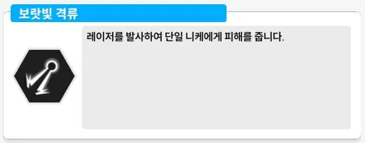
조우 패턴 보랏빛 격류입니다
공격력이 가장 높은 니케를 대상으로 하고 있습니당
쉴드나 엄폐로 파훼 가능합니다
2. 침묵의 눈물
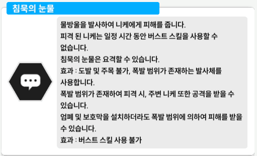
침묵의 눈물입니다
요격 가능한 보라색 젤리를 발사하는데
엄폐로 회피는 가능하겠으나 보시다시피 엄폐 상태에서도 피격되면 주변에 데미지를 줍니당
아니스나 각설 넣는다면 자동 요격이 되겠지만 그렇지 않다면 요격 해주세용
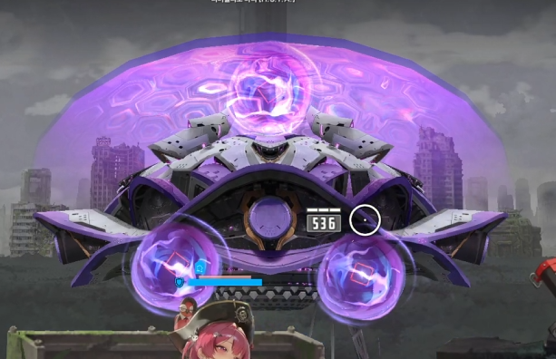
이렇게 3개 나오고 다음 젤리 생성되기 전에 떨어지기 시작합니당
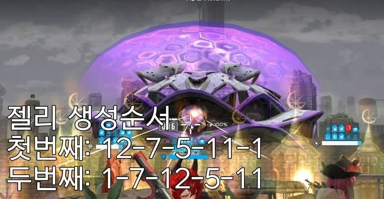
순서는 이렇게 나와용
3. 굽이치는 물줄기
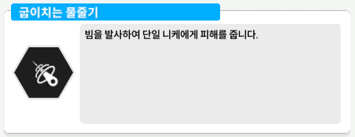
마지막 젤리 떨어지면서 거의 동시에 나와용
단일 니케 대상 다단히트 패턴입니당
위험표시 잠깐 뜨니까 확인하고 엄폐 해주시거나 맞딜 해주시면 됩니당
4. 밀려오는 파문
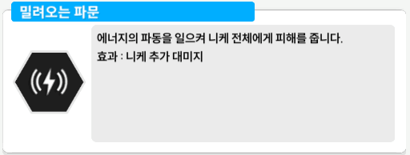
전체 위험 표시가 뜨면서 광역 공격을 준비합니다
쉴드나 엄폐로 파훼 가능하지만
굽이치는 물줄기 패턴 이후에 바로 나오는 걸로 보아
이전 패턴은 엄폐로 피하고 밀려오는 파문은 쉴드로 파훼 하라는 의도 같네용
니케 추뎀도 붙어 있어서 엄청 아픕니당
피격 타이밍 재기 어려워서 엄폐로 파훼하신다면 타이밍을 잘 맞추셔야합니당
5. 고요한 수평선
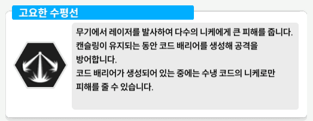
속성 저지 패턴 고요한 수평선입니다
저지원이 깔끔하게 좌우로 나왔어용
저지에 실패하면 이렇게 됩니당
6. 다가오는 수평선
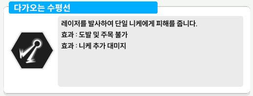
니 케 해 요
속성저지 이후 버가 사라졌다 나타나서 닉게하라고 총들고 협박하는 패턴입니다
이 패턴도 니케 추뎀이 달려 파투력이었음에도 딜이 엄청 아프게 들어왔어용
쉴드나 엄폐로 파훼 가능합니당
7. 암전 저지
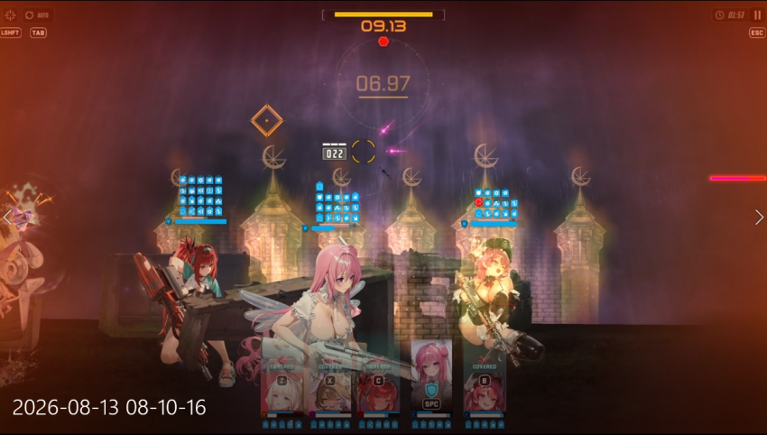
암전 저지는 상당히 쉽게 나왔습니당
흰원은 없고 나오는 횟수는 총 4회입니당
사실 횟수 몰라도 되는 수준으로 나와서 그냥 하시면 될거에용
암전 저지 실패하면 속저 실패했을 때랑 동일하게 패턴이 나옵니당
암전 끝나고 바로 2페로 이어집니다
2페부턴 패턴이 강화됩니다
2페 들어가자마자 레이저 뿅뿅 나오구용
젤리도 한번에 나와서 빠르게 피격합니당
2페부터는 침묵의 심판으로 패턴 이름이 변경되는 것 같습니당
이 부분은 확인이 필요하겠네용
8. 거꾸로 오르는 폭포
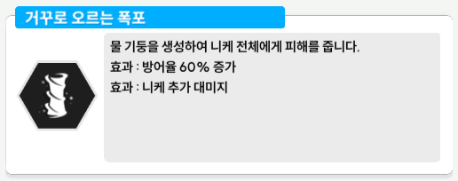
거꾸로 오르는 폭포입니다
버가 상당히 단단해집니다
일정 시간이 지나면 이렇게 전체 광역기로 딜이 들어와용
쉴드나 엄폐로 파훼가능하고 엄폐하신다면 보고 피하셔도 될만큼 여유롭습니다
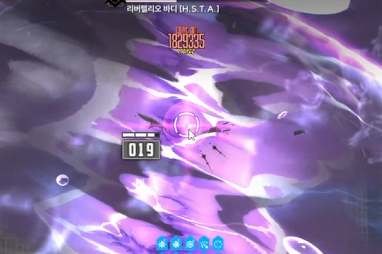
이때도 코어 히트나 관통 다 가능해용
9. 심해의 장막
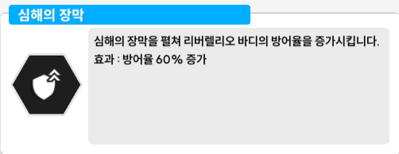
일반 저지 패턴인 심해의 장막입니다
3개의 저지원이 나오는데 방어력이 올라가면서 꽤 단단한 편입니다
저지에 실패하면 이렇게 광역기가 들어옵니다
패턴은 여기까지 보겠습니당
암전 저지를 기준으로 1, 2페를 나눌 수 있는데
1페에선
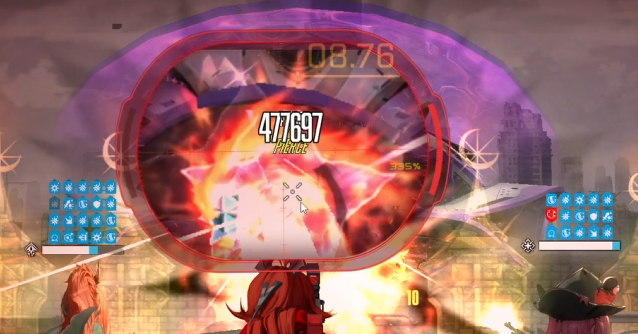
상시관통입니당
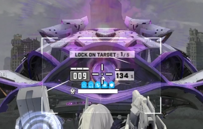
중앙 보라색 지점이랑 위에 뚜껑이 관통 지점인데용
조준보정 키시면 아래 보라색 중앙 지점에 조준해줘서 관통하기 쉽습니당
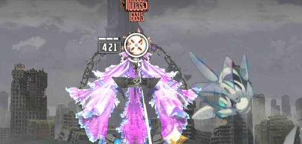
2페부턴 코어가 열립니당
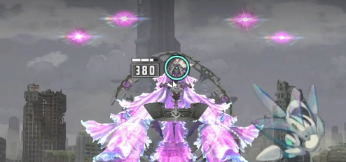
요 지점에 코어가 있고 관통도 같이 들어가용
그래서 48지 보스 버는 조준 보정 키는 게 편하실거에요
이외에도 관통 지점들이 있으나 코어랑 같이 때리는 게 중요하니 코어를 때려줍시당
전체적으로 아프고 방어력 상승 기믹도 있어 지즈버거를 보는 느낌이 났습니당
솔레 때는 스테이지랑 다르게 바꿔서 나올 수 있기 때문에 나오면 다시 봐야겠습니다
공략은 요기까지입니당
그럼 안뇽